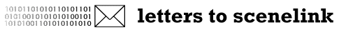

|
 ..................................................................................................................... Subject feedback the design of your page is amazing!!!!! one of the best pages i've ever seen... xtreme99 ..................................................................................................................... From Jochen Fruehauf <@iis.fhg.de> Subject NOTIFICATION OF CRIMINAL OFFENCE ***** NOTIFICATION OF CRIMINAL OFFENCE ***** Our ref.-no. http//www.scenelink.org/funkshop/drm-l3ap.zip Date 16.10.1997 To Administration of scenelink.org This is to notify you that somebody at your site has carried out a criminal offense using the following URL http//www.scenelink.org/funkshop/drm-l3ap.zip - We will be able to prove that the software copy bought from us by email order of 21.05.97(our record #10831) is distributed as an illegal cracked version on the internet. - Further we will be able to prove that the given recepient´s address was wrong. - The VISA credit card account used for this transaction has been misused. - We will be able to prove that the programm available for download provided under the mentioned URL(s) means a violation of existing software licensing rules. This is commercial software distributed only by us, licensed for a single user only. ********************************************************* In order to limit the damage, we ask you to * Immediately close access to the mentioned URL(s) * Backup all relevant user data for further investigation by legal authorities ********************************************************* You can be assured that we will persue this case further as a criminal offense to the maximum extent possible under law. Fraunhofer/OPTICOM retain the right of claims for compensation in respect of damage which occured by the giving away of the illegal program copy, as well as to not restricting access to the URL(s) after receiving notice of this infringement of copyright. This claim shall also extend to all costs which Fraunhofer/OPTICOM incur in defending itself. We have instructed our legal department to further persue this case. Your cooperation in this case concerning personal details on the originator of this offence would be highly appreciated. Sincerely, Jochen Fruehauf, Software Piracy Dept. Fraunhofer Ges. IIS, Erlangen, Germany ..................................................................................................................... From Jochen Fruehauf <@iis.fhg.de> Subject NOTIFICATION OF CRIMINAL OFFENCE Dear Sir, our ref. http//www.scenelink.org/funkshop/drm-l3ap.zip date 19.10.1997 neofish9@scenelink.org wrote > First off, my personal apologies. Scenelink exists as an information source > for internet art, music, and piracy, but the latter is not in any way > supported by our site directly. > > I'm grateful that you pointed out the file residing on our system, as these > kinds of problems could obviously be a little more difficult to explain to > proper authorities. The pirated file was not put there by myself or any > other member of scenelink. But you are responsible for everything happens under your domain. > It was in a dir which belonged to someone doing > freelance work for us on an art gallery. Rest assured this person will be > questioned about the file. If it was made accessible to the public, they > will be removed from our system. I hope so. > feel free to contact me further about this matter, I'd be interested in > hearing what you thought of scenelink. > To contact me directly, email neofish9@scenelink.org or call xxx-xxx-xxxx Please take this warning serious since Fraunhofer headquarters is currently worldwide prosecuting all kinds of copyright violation and criminal offence. In order to limit the damage, we ask you again to * Immediately close access to the mentioned URL(s) * Backup all relevant user data for further investigation by legal authorities Sincerely, Jochen Fruehauf, Software Piracy Dept. Fraunhofer Ges. IIS, Erlangen, Germany |